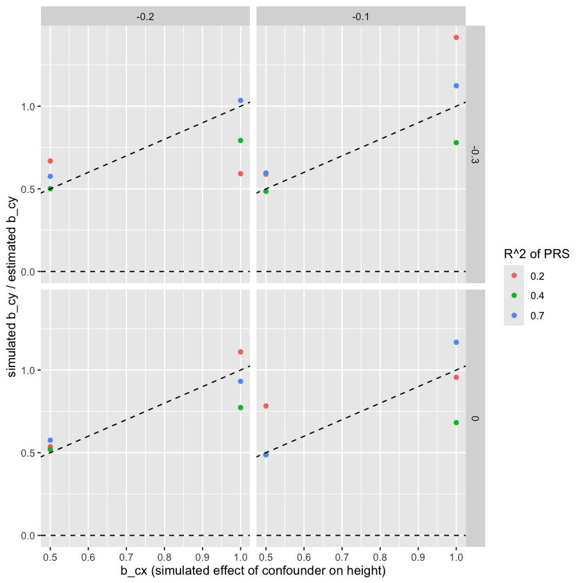

\[
X = \beta_{gx} G + \beta_{cx} C + \epsilon_x
\]
\[
Y = \beta_{xy} X + \beta_{cy} C + \epsilon_y
\]
Two stage least squares aims to estimate the causal effect of X on Y, \(\beta_{xy}\), by using G as an instrument for X. The first stage regression is:
\[
X = \beta_{gx} G
\]
Make a prediction of X from G, and then use this predicted value of X in the second stage regression to estimate \(\beta_{xy}\).
\[
\hat{X} = \hat{\beta}_{gx} G
\]
And then the second stage regression is:
\[
Y = \beta_{xy} \hat{X} + error
\]
So \(\hat{\beta_{xy}}\) is the estimate of the causal effect of X on Y, which is independent of the common confounding of X and Y.
Can we estimate the effect of environment on Y using the residual height?
According to the model described above, the influence of adverse childhood environment on CHD is due to two paths:
\(\beta_{cy}\): the direct effect of environment on CHD
\(\beta_{cx} \beta_{xy}\): the effect of environment on CHD mediated by height
The PRS effect estimate on CHD represents \(\beta_{xy}\), the causal effect of height on CHD. Can we express \(\beta_{cy}\) in terms of values that are observable in the data?
In order to estimate \(\beta_{cy}\), we need to know two parameters:
\(var(C)\): the variance of ‘childhood environment’. It is essentially \(var(C) = (1 - h^2) var(X) - var(\epsilon_x)\), where \(var(\epsilon_x)\) is the developmental stochastic process, leaving \(var(C)\) to represent the shared and non-shared environment. Empirically, this is estimated at around 10% of the variance in height, so we can set \(var(C) = 0.1 var(X)\).
\(\beta_{cx}\): the effect of childhood environment on height. This cannot be easily estimated, so we can set this to 1, which means that when we interpret \(\beta_{cy}\), we are interpreting it as the effect of childhood environment on CHD relative to its effect on height.
This simulation checks that the expected terms described above are recapitulated in simulated data.
Attaching package: ‘dplyr’
The following objects are masked from ‘package:stats’:
filter, lag
The following objects are masked from ‘package:base’:
intersect, setdiff, setequal, union
A data.frame: 17 × 4
parameter
obs
exp
ratio
<chr>
<dbl>
<dbl>
<dbl>
var_x
0.9998816
0.9993922
1.00
var_prs_explained
0.4891528
0.4897022
1.00
var_prs_unexplained
0.2099084
0.2098724
1.00
var_prs
0.6990508
0.6995745
1.00
var_residual
0.5116245
0.5096900
1.00
var_y
1.2706040
1.2740153
1.00
var_ex
0.1999562
0.1994763
1.00
cov_prs_y
-0.2434720
-0.2448511
0.99
cov_prs_x
0.4887049
0.4897022
1.00
cov_residual_y
-0.2750753
-0.2750840
1.00
cov_x_y
-0.5183245
-0.5196961
1.00
lm_x_y
-0.5183858
-0.5200122
1.00
lm_xhat_y
-0.4981984
-0.5000000
1.00
lm_residual_y
-0.5376513
-0.5397084
1.00
lm_u_y
-0.2000000
-0.2000000
1.00
lm_u_y_resx
-0.2000000
-0.2023897
0.99
ratio
0.9600842
0.9881925
0.97
Now to put this to use, the main objective is to estimate \(\beta_{cy}\). However it is clear that we cannot estimate the three missing values \(\beta_{cx}\), \(\beta_{cy}\) and \(var(c)\) as the model is underspecified. However we can fix \(\beta_{cx} = 1\) so that we are estimating \(\beta_{cy}\) in terms of the effect of C on Y relative to its effect on X (height). We can also use the literature to fix the variances of G=0.7, C=0.15 and E=0.15.
We will have the following variables in our analysis:
Height
PRS
Outcome variable
We will be able to estimate a relative effect of the childhood environment C on the outcome as
Where: - \(\beta_{xy}\) is estimated using AER::ivreg for proper instrumental variable regression - \(var(C)\) is set to 0.15 based on literature - \(h^2 = 0.7\) is the heritability of height - \(R^2\) is the proportion of heritability explained by the PRS
Both methods should give the same estimate in theory. We use bootstrapping to obtain standard errors, with parametric resampling of \(\beta_{xy}\) from its 2SLS sampling distribution for computational efficiency.
Because we have two estimates of \(\beta_{cy}\) we can combine them using generalised least squares estimation as long as we can estimate the covariance between the two estimates.
The estimates are:
\(\hat{\beta}_{cy,1} = \hat{\theta}_1\) - using height
\(\hat{\beta}_{cy,2} = \hat{\theta}_2\) - using residual height
Loading required package: future
Attaching package: ‘future’
The following object is masked from ‘package:survival’:
cluster
The following object is masked from ‘package:lmtest’:
reset
Continuous outcome detected - standardized to mean=0, SD=1
Continuous outcome detected - standardized to mean=0, SD=1
Continuous outcome detected - standardized to mean=0, SD=1
Continuous outcome detected - standardized to mean=0, SD=1
Continuous outcome detected - standardized to mean=0, SD=1
Continuous outcome detected - standardized to mean=0, SD=1
Continuous outcome detected - standardized to mean=0, SD=1
Continuous outcome detected - standardized to mean=0, SD=1
Continuous outcome detected - standardized to mean=0, SD=1
Continuous outcome detected - standardized to mean=0, SD=1
Continuous outcome detected - standardized to mean=0, SD=1
Continuous outcome detected - standardized to mean=0, SD=1
Continuous outcome detected - standardized to mean=0, SD=1
Continuous outcome detected - standardized to mean=0, SD=1
Continuous outcome detected - standardized to mean=0, SD=1
Continuous outcome detected - standardized to mean=0, SD=1
Continuous outcome detected - standardized to mean=0, SD=1
Continuous outcome detected - standardized to mean=0, SD=1
Continuous outcome detected - standardized to mean=0, SD=1
Continuous outcome detected - standardized to mean=0, SD=1
Continuous outcome detected - standardized to mean=0, SD=1
Continuous outcome detected - standardized to mean=0, SD=1
Continuous outcome detected - standardized to mean=0, SD=1
Continuous outcome detected - standardized to mean=0, SD=1
Continuous outcome detected - standardized to mean=0, SD=1
res %>%ggplot(aes(x = b_cx, y = b_cy / beta_cy, color =factor(r2_prs))) +geom_point() +geom_abline(slope =1, intercept =0, linetype ="dashed") +facet_grid(b_xy ~ b_cy) +geom_hline(yintercept =0, linetype ="dashed") +labs(x ="b_cx (simulated effect of confounder on height)", y ="simulated b_cy / estimated b_cy", color ="R^2 of PRS")

Summary
The estimate_beta_cy function can be used to estimate the influence of childhood environment on health outcomes.
This is estimated twice, once using height and once using residual height. Consistency of the effect estimates indicates gene-environment equivalence.
Meta-analysis of the two estimates can be performed using generalised least squares to give an overall estimate with tighter confidence intervals
In broader context: We demonstrate that the height, residual height and height PRS exhibit different effects on health outcomes. This is consistent with residual height being enriched for the influence of childhood environment on the outcomes. This method aims to estimate that childhood environment -> outcome association.
Problems
The estimate using PRS and residual give identical betas, which suggests that I am wrong about being able to meta-analyse them if there is no sampling variation between them
When the outcome of interest is binary what is the appropriate way to estimate \(\beta_{cy}\)? Note that the scale of this estimate needs to be interpreted as “the effect of childhood on Y relative to its effect on X”. So when X is continuous and Y is binary then we need to think about what the scales of X and Y should be such that if \(\hat{\beta}_{cy} = 1\) then we interpret the influence of childhood on Y to be equal to its effect on X.